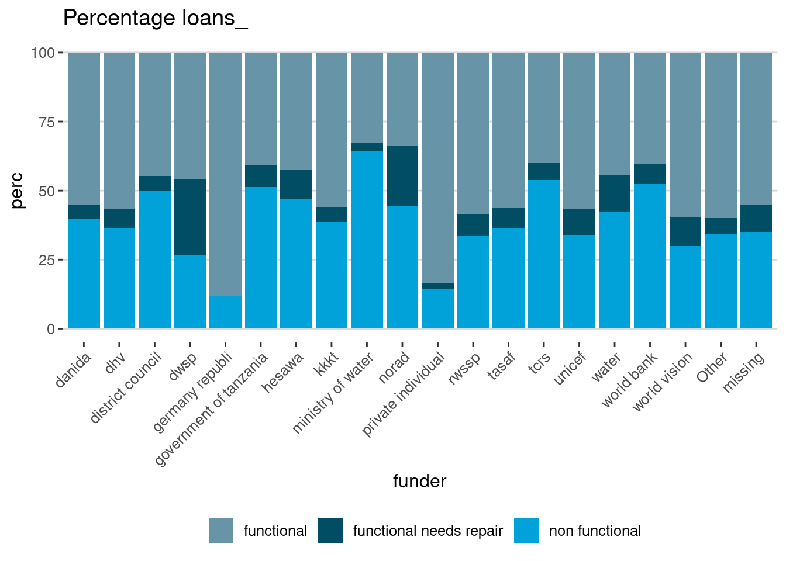
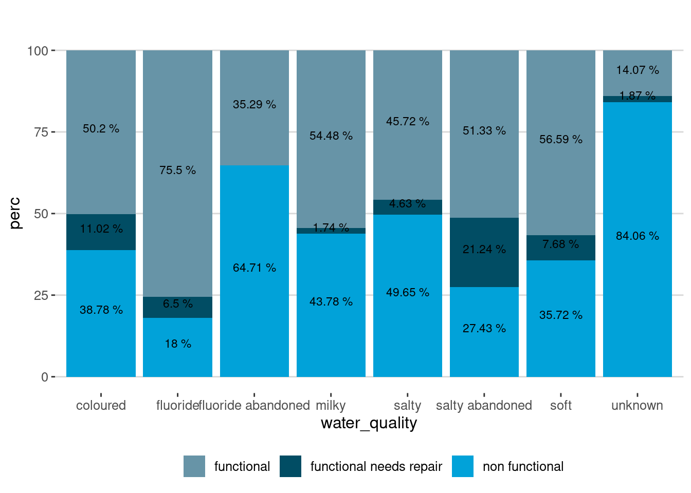
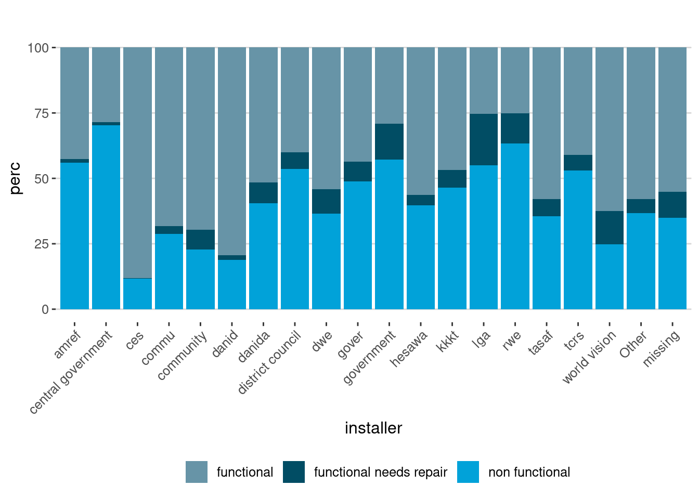
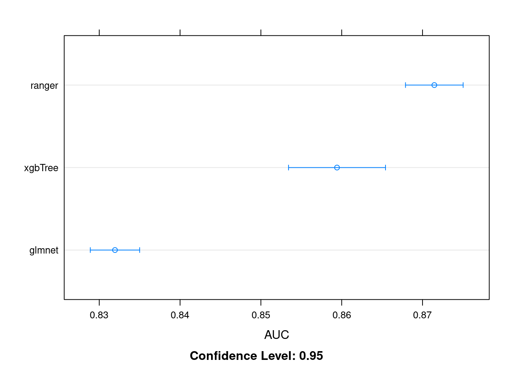

library(tidyverse)
library(data.table)
library(knitr)
library(broom)
library(caret)
library(kableExtra)
library(ggthemes)
library(DT)Tanzanian Water Pumps
train_y <- fread("0bf8bc6e-30d0-4c50-956a-603fc693d966.csv")
train_x <- fread("4910797b-ee55-40a7-8668-10efd5c1b960.csv")
test <- fread("702ddfc5-68cd-4d1d-a0de-f5f566f76d91.csv")train_data <- merge(train_y, train_x, by = "id")
train_data[, set := "train"]
test[, set := "test"]
pump_data <- rbindlist(list(train_data, test), fill = T)train_data[, .N, by = status_group] %>%
.[, Perc := round(N/sum(N) * 100, 2)] %>%
datatable()pump_data[amount_tsh != 0, .(Mean = mean(amount_tsh),
Median = median(amount_tsh),
Min = min(amount_tsh),
Max = max(amount_tsh),
First_qurtile = quantile(amount_tsh, .25),
Third_qurtile = quantile(amount_tsh, .75)),
by = status_group] %>%
datatable()col_class <- sapply(train_data, class)
char_cols <- names(col_class[col_class == "character"])
char_cols <- char_cols[char_cols != "date_recorded"]
char_cols [1] "status_group" "funder" "installer"
[4] "wpt_name" "basin" "subvillage"
[7] "region" "lga" "ward"
[10] "recorded_by" "scheme_management" "scheme_name"
[13] "extraction_type" "extraction_type_group" "extraction_type_class"
[16] "management" "management_group" "payment"
[19] "payment_type" "water_quality" "quality_group"
[22] "quantity" "quantity_group" "source"
[25] "source_type" "source_class" "waterpoint_type"
[28] "waterpoint_type_group" "set" A lazy way of collapsing columns, Please DO NOT do it,
- It’s best to go through all columns one by one to see how well lumping together will be beneficial
factor_cols <- pump_data[, ..char_cols]
factor_cols[, (char_cols) := lapply(.SD, str_to_lower), .SDcols = char_cols]
factor_cols[, (char_cols) := lapply(.SD, fct_lump_n, n = 20), .SDcols = char_cols]
#factor_cols[, (char_cols) := lapply(.SD, fct_lump_n, n = 5), .SDcols = char_cols]
factor_cols[factor_cols == ""] = NA
factor_cols[factor_cols == "0"] = NA
factor_cols[, (char_cols) :=lapply(.SD, fct_explicit_na, na_level = "missing"), .SDcols = char_cols]chars_dat <- melt(factor_cols, id.vars = "status_group")
chars_dat[, .(freq = .N), by = .(variable, value)] %>%
.[, perc := round(freq/sum(freq) * 100), by = .(variable)] %>%
datatable()factor_cols[set == "train", .N, by = .(funder,status_group)] %>%
.[, perc := round(N/sum(N) * 100, 2), by = .(funder)] %>%
ggplot(aes(funder, perc, fill = status_group)) +
geom_bar(stat = "identity") +
# geom_text(aes(funder, perc, label = paste0(perc, "%"),
# vjust = .05, hjust = .5),
# size = 3, position = position_stack(vjust = 0.5))+
theme_hc()+
labs(title = "Percentage loans_")+
scale_fill_economist(name = "")+
theme(legend.position = "bottom",
axis.text.x = element_text(angle = 45, hjust = 1, vjust = 1))
factor_cols[set == "train", .N, by = .(water_quality,status_group)] %>%
.[, perc := round(N/sum(N) * 100, 2), by = .(water_quality)] %>%
ggplot(aes(water_quality, perc, fill = status_group)) +
geom_bar(stat = "identity") +
geom_text(aes(water_quality, perc, label = paste(perc, "%"),
vjust = .05, hjust = .5),
size = 3, position = position_stack(vjust = 0.5))+
theme_hc()+
labs(title = "")+
scale_fill_economist(name = "")+
theme(legend.position = "bottom")
factor_cols[set == "train", .N, by = .(installer,status_group)] %>%
.[, perc := round(N/sum(N) * 100, 2), by = .(installer)] %>%
ggplot(aes(installer, perc, fill = status_group)) +
geom_bar(stat = "identity") +
theme_hc()+
labs(title = "")+
scale_fill_economist(name = "")+
theme(legend.position = "bottom",
axis.text.x = element_text(angle = 45, hjust = 1, vjust = 1))
pump_data[construction_year == 0, construction_year := NA]
summary(pump_data$construction_year) Min. 1st Qu. Median Mean 3rd Qu. Max. NA's
1960 1988 2000 1997 2008 2013 25969 pump_data[, construction_year2 := cut(construction_year, breaks = c(1959, 1988, 2000, 2008, 2013))]
pump_data[, construction_year2 := fct_explicit_na(construction_year2, na_level = "unknown")]
summary(pump_data$construction_year2)(1959,1988] (1988,2000] (2000,2008] (2008,2013] unknown
12650 12585 13389 9657 25969 # train_set <- pump_data[set == "train",
# .(status_group, go_funded, water_quality,
# quantity, construction_year2,
# management_group, go_installer,
# waterpoint_type_group1, longitude, latitude, basin,
# management_group1)]
#is there biase in recording
del_cols <- c( "recorded_by")
data_clean <- cbind(pump_data[, .(construction_year2, latitude, longitude)], factor_cols)
train_set <- data_clean[set == "train"]
train_set[, set := NULL]
char_cols2 <- char_cols[!char_cols %in% c("status_group" )]
train_set_dmmy <- dummies::dummy.data.frame(train_set, names = char_cols2) %>% setDT()
train_set_dmmy[, status_group := factor(status_group,
levels = c("functional", "functional needs repair", "non functional"),
labels = c("functional", "functional_needs_repair", "non_functional"))]set.seed(100)
#train_set <- train_set[status_group %in% c("functional", "functional_needs_repair") ]
train_ind <- sample(1:nrow(train_set_dmmy), round(0.7 * nrow(train_set)))
train_set_dmmy[, status_group := factor(status_group)]
train_set1 <- train_set_dmmy[train_ind,]
set.seed(100)
cv_fold <- createFolds(train_set1$status_group, k = 3)library(caretEnsemble)
train_ctrl <- trainControl(method = "cv",
number = 3,
summaryFunction = multiClassSummary,
classProbs = TRUE,
allowParallel=T,
index = cv_fold,
verboseIter = TRUE,
returnResamp = "all",
savePredictions = "final",
search = "grid")
xgb_grid <- expand.grid(nrounds = c(50,100),
eta = 0.06,
max_depth =c(10, 50),
gamma = 6,
colsample_bytree = 0.8,
min_child_weight =0.8,
subsample = .8)
ranger_grid <- expand.grid(splitrule = "extratrees",
mtry = c(20, 50, 100),
min.node.size = 1)
glmnet_grid <- expand.grid(alpha = c(0, 1),
lambda = seq(0.0001, 1, length = 3))set.seed(100)
library(tictoc)
tic()
model_list <- caretList(
status_group~.,
data=train_set1,
trControl=train_ctrl,
tuneList = list(caretModelSpec(method="xgbTree", tuneGrid= xgb_grid),
caretModelSpec(method="ranger", tuneGrid= ranger_grid),
caretModelSpec(method="glmnet", tuneGrid= glmnet_grid)
)
)+ Fold1: eta=0.06, max_depth=10, gamma=6, colsample_bytree=0.8, min_child_weight=0.8, subsample=0.8, nrounds=100
[17:17:41] WARNING: src/c_api/c_api.cc:935: `ntree_limit` is deprecated, use `iteration_range` instead.
[17:17:42] WARNING: src/c_api/c_api.cc:935: `ntree_limit` is deprecated, use `iteration_range` instead.
- Fold1: eta=0.06, max_depth=10, gamma=6, colsample_bytree=0.8, min_child_weight=0.8, subsample=0.8, nrounds=100
+ Fold1: eta=0.06, max_depth=50, gamma=6, colsample_bytree=0.8, min_child_weight=0.8, subsample=0.8, nrounds=100
[17:18:21] WARNING: src/c_api/c_api.cc:935: `ntree_limit` is deprecated, use `iteration_range` instead.
[17:18:21] WARNING: src/c_api/c_api.cc:935: `ntree_limit` is deprecated, use `iteration_range` instead.
- Fold1: eta=0.06, max_depth=50, gamma=6, colsample_bytree=0.8, min_child_weight=0.8, subsample=0.8, nrounds=100
+ Fold2: eta=0.06, max_depth=10, gamma=6, colsample_bytree=0.8, min_child_weight=0.8, subsample=0.8, nrounds=100
[17:18:34] WARNING: src/c_api/c_api.cc:935: `ntree_limit` is deprecated, use `iteration_range` instead.
[17:18:34] WARNING: src/c_api/c_api.cc:935: `ntree_limit` is deprecated, use `iteration_range` instead.
- Fold2: eta=0.06, max_depth=10, gamma=6, colsample_bytree=0.8, min_child_weight=0.8, subsample=0.8, nrounds=100
+ Fold2: eta=0.06, max_depth=50, gamma=6, colsample_bytree=0.8, min_child_weight=0.8, subsample=0.8, nrounds=100
[17:19:14] WARNING: src/c_api/c_api.cc:935: `ntree_limit` is deprecated, use `iteration_range` instead.
[17:19:15] WARNING: src/c_api/c_api.cc:935: `ntree_limit` is deprecated, use `iteration_range` instead.
- Fold2: eta=0.06, max_depth=50, gamma=6, colsample_bytree=0.8, min_child_weight=0.8, subsample=0.8, nrounds=100
+ Fold3: eta=0.06, max_depth=10, gamma=6, colsample_bytree=0.8, min_child_weight=0.8, subsample=0.8, nrounds=100
[17:19:28] WARNING: src/c_api/c_api.cc:935: `ntree_limit` is deprecated, use `iteration_range` instead.
[17:19:28] WARNING: src/c_api/c_api.cc:935: `ntree_limit` is deprecated, use `iteration_range` instead.
- Fold3: eta=0.06, max_depth=10, gamma=6, colsample_bytree=0.8, min_child_weight=0.8, subsample=0.8, nrounds=100
+ Fold3: eta=0.06, max_depth=50, gamma=6, colsample_bytree=0.8, min_child_weight=0.8, subsample=0.8, nrounds=100
[17:20:10] WARNING: src/c_api/c_api.cc:935: `ntree_limit` is deprecated, use `iteration_range` instead.
[17:20:10] WARNING: src/c_api/c_api.cc:935: `ntree_limit` is deprecated, use `iteration_range` instead.
- Fold3: eta=0.06, max_depth=50, gamma=6, colsample_bytree=0.8, min_child_weight=0.8, subsample=0.8, nrounds=100
Aggregating results
Selecting tuning parameters
Fitting nrounds = 100, max_depth = 50, eta = 0.06, gamma = 6, colsample_bytree = 0.8, min_child_weight = 0.8, subsample = 0.8 on full training set
+ Fold1: splitrule=extratrees, mtry= 20, min.node.size=1
- Fold1: splitrule=extratrees, mtry= 20, min.node.size=1
+ Fold1: splitrule=extratrees, mtry= 50, min.node.size=1
- Fold1: splitrule=extratrees, mtry= 50, min.node.size=1
+ Fold1: splitrule=extratrees, mtry=100, min.node.size=1
Growing trees.. Progress: 85%. Estimated remaining time: 5 seconds.
- Fold1: splitrule=extratrees, mtry=100, min.node.size=1
+ Fold2: splitrule=extratrees, mtry= 20, min.node.size=1
- Fold2: splitrule=extratrees, mtry= 20, min.node.size=1
+ Fold2: splitrule=extratrees, mtry= 50, min.node.size=1
- Fold2: splitrule=extratrees, mtry= 50, min.node.size=1
+ Fold2: splitrule=extratrees, mtry=100, min.node.size=1
Growing trees.. Progress: 86%. Estimated remaining time: 5 seconds.
- Fold2: splitrule=extratrees, mtry=100, min.node.size=1
+ Fold3: splitrule=extratrees, mtry= 20, min.node.size=1
- Fold3: splitrule=extratrees, mtry= 20, min.node.size=1
+ Fold3: splitrule=extratrees, mtry= 50, min.node.size=1
- Fold3: splitrule=extratrees, mtry= 50, min.node.size=1
+ Fold3: splitrule=extratrees, mtry=100, min.node.size=1
Growing trees.. Progress: 87%. Estimated remaining time: 4 seconds.
- Fold3: splitrule=extratrees, mtry=100, min.node.size=1
Aggregating results
Selecting tuning parameters
Fitting mtry = 20, splitrule = extratrees, min.node.size = 1 on full training set
+ Fold1: alpha=0, lambda=1
- Fold1: alpha=0, lambda=1
+ Fold1: alpha=1, lambda=1
- Fold1: alpha=1, lambda=1
+ Fold2: alpha=0, lambda=1
- Fold2: alpha=0, lambda=1
+ Fold2: alpha=1, lambda=1
- Fold2: alpha=1, lambda=1
+ Fold3: alpha=0, lambda=1
- Fold3: alpha=0, lambda=1
+ Fold3: alpha=1, lambda=1
- Fold3: alpha=1, lambda=1
Aggregating results
Selecting tuning parameters
Fitting alpha = 0, lambda = 1e-04 on full training settoc()703.553 sec elapsedmodel_list$xgbTree
eXtreme Gradient Boosting
41580 samples
317 predictor
3 classes: 'functional', 'functional_needs_repair', 'non_functional'
No pre-processing
Resampling: Cross-Validated (3 fold)
Summary of sample sizes: 13860, 13860, 13860
Resampling results across tuning parameters:
max_depth nrounds logLoss AUC prAUC Accuracy Kappa
10 50 0.6187243 0.8459881 0.6802115 0.7547860 0.5157636
10 100 0.5926387 0.8524641 0.6887911 0.7603415 0.5298999
50 50 0.6069728 0.8524588 0.6887281 0.7629149 0.5350648
50 100 0.5779731 0.8594204 0.6984094 0.7674723 0.5473892
Mean_F1 Mean_Sensitivity Mean_Specificity Mean_Pos_Pred_Value
0.5711633 0.5540417 0.8301047 0.7595898
0.5830710 0.5640156 0.8356069 0.7594603
0.5860981 0.5666008 0.8372974 0.7603948
0.5977618 0.5766923 0.8423961 0.7548314
Mean_Neg_Pred_Value Mean_Precision Mean_Recall Mean_Detection_Rate
0.8722563 0.7595898 0.5540417 0.2515953
0.8716314 0.7594603 0.5640156 0.2534472
0.8736187 0.7603948 0.5666008 0.2543050
0.8726430 0.7548314 0.5766923 0.2558241
Mean_Balanced_Accuracy
0.6920732
0.6998113
0.7019491
0.7095442
Tuning parameter 'eta' was held constant at a value of 0.06
Tuning
Tuning parameter 'min_child_weight' was held constant at a value of 0.8
Tuning parameter 'subsample' was held constant at a value of 0.8
Accuracy was used to select the optimal model using the largest value.
The final values used for the model were nrounds = 100, max_depth = 50, eta
= 0.06, gamma = 6, colsample_bytree = 0.8, min_child_weight = 0.8
and subsample = 0.8.
$ranger
Random Forest
41580 samples
317 predictor
3 classes: 'functional', 'functional_needs_repair', 'non_functional'
No pre-processing
Resampling: Cross-Validated (3 fold)
Summary of sample sizes: 13860, 13860, 13860
Resampling results across tuning parameters:
mtry logLoss AUC prAUC Accuracy Kappa Mean_F1
20 0.5492160 0.8714603 0.7145098 0.7794733 0.5791659 0.6402572
50 0.6023253 0.8673458 0.6758671 0.7755652 0.5770019 0.6462120
100 0.7126941 0.8630358 0.6359068 0.7730159 0.5748031 0.6475980
Mean_Sensitivity Mean_Specificity Mean_Pos_Pred_Value Mean_Neg_Pred_Value
0.6144159 0.8551479 0.7242051 0.8751245
0.6242823 0.8562681 0.6974150 0.8701457
0.6282465 0.8564829 0.6870313 0.8676719
Mean_Precision Mean_Recall Mean_Detection_Rate Mean_Balanced_Accuracy
0.7242051 0.6144159 0.2598244 0.7347819
0.6974150 0.6242823 0.2585217 0.7402752
0.6870313 0.6282465 0.2576720 0.7423647
Tuning parameter 'splitrule' was held constant at a value of extratrees
Tuning parameter 'min.node.size' was held constant at a value of 1
Accuracy was used to select the optimal model using the largest value.
The final values used for the model were mtry = 20, splitrule = extratrees
and min.node.size = 1.
$glmnet
glmnet
41580 samples
317 predictor
3 classes: 'functional', 'functional_needs_repair', 'non_functional'
No pre-processing
Resampling: Cross-Validated (3 fold)
Summary of sample sizes: 13860, 13860, 13860
Resampling results across tuning parameters:
alpha lambda logLoss AUC prAUC Accuracy Kappa
0 0.00010 0.6218298 0.8319479 0.6497870 0.7439514 0.5036845
0 0.50005 0.6746615 0.8169808 0.6330926 0.7311568 0.4643535
0 1.00000 0.7068795 0.8096260 0.6250271 0.7228114 0.4433703
1 0.00010 0.6251197 0.8319851 0.6495486 0.7437350 0.5066840
1 0.50005 0.8893577 0.5000000 0.0000000 0.5424242 0.0000000
1 1.00000 0.8893577 0.5000000 0.0000000 0.5424242 0.0000000
Mean_F1 Mean_Sensitivity Mean_Specificity Mean_Pos_Pred_Value
0.5646638 0.5517857 0.8294169 0.6773631
NaN 0.5068225 0.8139668 NaN
NaN 0.4978057 0.8061242 NaN
0.5783964 0.5619689 0.8310915 0.6650360
NaN 0.3333333 0.6666667 NaN
NaN 0.3333333 0.6666667 NaN
Mean_Neg_Pred_Value Mean_Precision Mean_Recall Mean_Detection_Rate
0.8538487 0.6773631 0.5517857 0.2479838
0.8556091 NaN 0.5068225 0.2437189
0.8557185 NaN 0.4978057 0.2409371
0.8526489 0.6650360 0.5619689 0.2479117
NaN NaN 0.3333333 0.1808081
NaN NaN 0.3333333 0.1808081
Mean_Balanced_Accuracy
0.6906013
0.6603946
0.6519649
0.6965302
0.5000000
0.5000000
Accuracy was used to select the optimal model using the largest value.
The final values used for the model were alpha = 0 and lambda = 1e-04.
attr(,"class")
[1] "caretList"test_own <- train_set_dmmy[-train_ind]
accuracy <- c()
for (i in 1:length(model_list)) {
rf <- model_list[[i]]
pred <- predict(rf, newdata = test_own)
#auc[i] <- caret::(pred, test_own$status_group)
accuracy[i] <- round(Metrics::accuracy(pred, test_own$status_group) * 100, 2)
}
pred_df <- data.frame(models = names(model_list), accuracy)
DT::datatable(pred_df)resamples_models <- resamples(model_list)
dotplot(resamples_models, metric = "AUC")
# Alternatively, you can put in dense matrix, i.e. basic R-matrix
# library(lightgbm)
#
# train_x <- as.matrix(train_set1[, !status_group])
# train_y <- train_set1$status_group
#
#
# params = list('task'= 'train',
# 'boosting_type'= 'gbdt',
# 'objective'= 'multiclass',
# 'num_class'=3,
# 'metric'= 'multi_logloss',
# 'learning_rate'= 0.002296,
# 'max_depth'= 7,
# 'num_leaves'= 17,
# 'feature_fraction'= 0.4,
# 'bagging_fraction'= 0.6,
# 'bagging_freq'= 17)
#
# train_lgb = lgb.Dataset(data = train_x , label = train_y, params = params)
#
# print("Training lightgbm with Matrix")
#
# bst <- lightgbm(
# data = train_lgb
# , num_leaves = 4L
# , learning_rate = 1.0
# , nrounds = 2L
# , objective = "multiclass"
# )